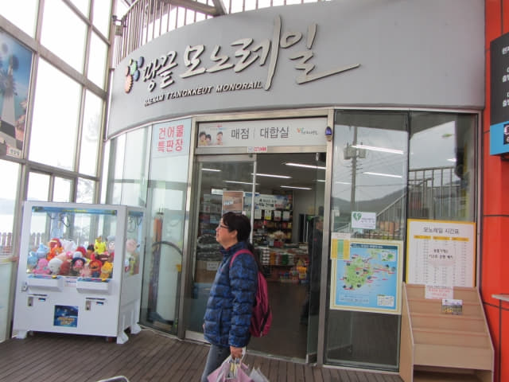
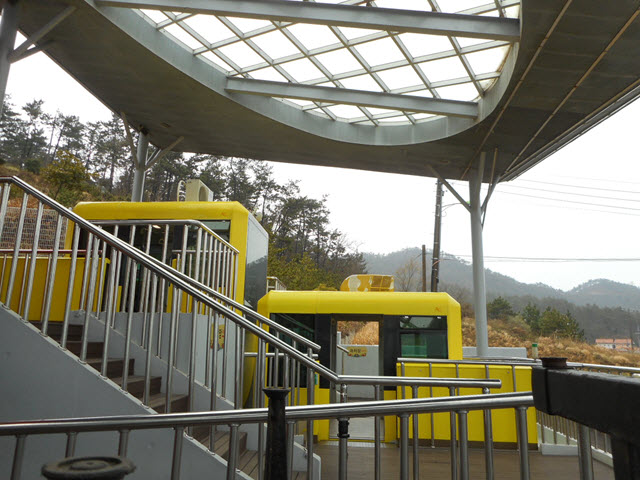

巴士準時在早上九時二十分從海南綜合巴士客運站開出, 沿途的雨勢完全沒有緩和的跡象, 看來天氣突然轉好的奇蹟不會出現, 想不到期望多年到訪的地方, 竟然以這樣的天氣來迎接我們這兩個貴人, 巴士約於早上十時十分抵達終點站 — 土末 (大地的末端), 這裡便是位於韓國最南端的村莊 – 地角村; 因處於突出海中的關係, 這裏便是可以站在同一地點可以看到日出和日落的地方, 我們便是被這原因吸引而來。
甫下車, 只感覺風勢猛烈, 雨點從四面八方打來, 匆匆走到屋簷下避雨。

在屋簷下站了一會, 在這樣惡劣的天氣, 很難遊覽, 原本安排了大半天在土末, 吹吹海風, 欣賞海岸壯麗景色, 現在看來只可以在附近一帶巡巡, 開始有點後悔決定堅持來這裡, 浪費了二萬多韓元的昂貴交通費! 現在最重要反而是要知道返回海南的巴士時刻表, 才決定土末的行程, 但那裡有巴士時刻表?
接著沿馬路走, 經過一間小屋, 看見門是打開的, 便走進避雨, 看見窗上張貼的時刻表, 估計這裡便是旅客咨詢中心。看了時刻表很久, 都看不到海南 (해남)這兩個韓字, 問了職員小姐, 又不太明白她說什麼, 好像說所有巴士班次都可以往海南的, 沒辦法, 唯有上車時和車長確定吧!
看見往海南的巴士那麼頻密, 總算安了心, 如果天氣轉得更壞, 起碼可以隨時離開, 看看出發前準備的土末遊覽地圖, 土末單軌纜車站離這裡不遠, 沿海邊的步道一直向前走便是, 便決定往那裡逛逛, 然後才離開。

撐傘冒雨匆匆走過馬路, 循海邊的方向走, 經過一間好像雜貨店的超級市場, 又走進去避避雨, 順便看看街道的環境。
回頭望望, 剛才那間小屋果然是旅客咨詢中心。
土末街道一片冷清。
剛才下車的巴士站就在馬路對面, 估計稍後應該也在那裡上車。
超級市場原來是巴士車票售票處
走進超級市場逛逛, 看見柱上也貼了一張時刻表, 好奇問問老闆娘往海南的巴士, 好像說右邊的巴士班次是會停靠海南的, 看清楚, 原來一天只有四個班次, 望望手錶, 現在是十時二十分, 沒理由乘 10:45 第一班次吧, 千里迢迢來到, 花了二萬多韓元交通費, 縱使天氣再差, 總要逗留多一會才離開吧, 便決定乘 12:15 的巴士班次返回海南, 這樣便可以在土末逗留兩小時, 總算有交代了!
接著再問問在那裡買車票, 原來就在超級市場這裡! 幸好走來超級市場逛逛, 不然錯過了 12:15 的巴士班次便麻煩了。
其實左邊的巴士班次應該也會停靠海南的, 因為我們回程是搭乘早上 11:50 的巴士返回海南。
接著走到海邊, 這裡豎立了土末 (땅끝)的石碑 – 「土末碑」, 說明了這裡是韓國本土最南端的地方, 也稱為地角及天涯海角。

越靠近海邊, 風勢越大, 把手中雨傘和相機吹得上下左右搖擺, 拍攝非常困難, 每拍攝一張照片, 都弄得相機鏡頭和機身點點水花。
前面還有很多行程, 不想弄壞相機, 在海邊匆匆拍了幾張照片便離開, 循小路往上走。
土末單軌纜車站(땅끝모노레일승강장)、土末展望台 (땅끝전망대)
向上走了一會, 已經看見葛頭山標高156米的獅子峰上的土末展望台, 估計前面山下的建築物便是土末單軌纜車站吧。
來到山下的土末單軌纜車站 (Haenam Ttangkkeut Monorail)。

進入土末單軌纜車站, 望望手錶, 差不多早上十時半, 剛好有一班單軌纜車快將開往山上的土末展望台, 要決定是否乘搭了!

